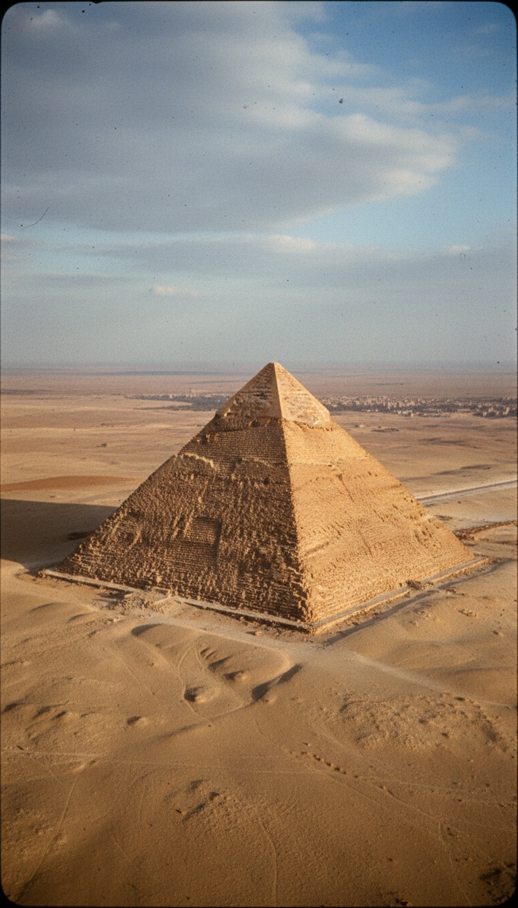

The Great Pyramid of Giza has eight faces. The fourth-grade textbook shows four. The tourist brochure shows four. The UNESCO photograph shows four. The number is eight, and the builders put it there on purpose.
This is not a fringe claim. It was measured with calibrated steel instruments by William Flinders Petrie in 1880. It was photographed from the air by a Royal Air Force pilot in April 1940. The data has sat in public archives for over a century. The literature still says four.

What Petrie Documented in 1883
William Flinders Petrie arrived at Giza in 1880 carrying a surveying kit that included steel measuring rods accurate to one-thousandth of an inch. He spent two years on the plateau. His published findings, The Pyramids and Temples of Gizeh, released by Field and Tuer in London in 1883, contain the measurement that should have rewritten every textbook produced since: each of the four faces of the Great Pyramid is not flat. Each face curves inward along its vertical centerline. The concavity runs from the pyramid's base to its apex, a continuous inward arc Petrie measured at approximately 0.92 meters at its deepest point. Two full years of field work. Steel instruments calibrated to fractions of an inch. Published findings from a British institution. The data is not contested. The textbooks still say four faces.
The RAF Photograph from April 1940
In April 1940, a Royal Air Force pilot identified in squadron records as P. Groves was flying a reconnaissance sortie over the Giza plateau. The spring equinox had just passed. The sun was climbing low on the eastern horizon, producing a raking light across the ancient stone. Groves was not documenting the pyramid. He was doing his assigned job. The photograph he returned with showed the Great Pyramid divided by shadow lines into eight distinct triangular panels, four vertical breaks running down faces that every ground-level photograph shows as smooth and flat. Groves' image was filed in RAF archives and has since been reproduced in multiple studies of Giza survey history, including structural analysis published by French architect Jean-Pierre Houdin. The image exists in institutional archives. The photographic record is dated. The building is still described as four-sided in standard Egyptological literature.
"The inward curve on the north face mirrors the curve on the south face to within centimeters across 220 meters of polished limestone. That is not craftsmanship. That is calibration against a reference point the builders had no reason to need from the ground."
The Precision That Ground-Level Work Cannot Explain
Petrie's 1883 survey confirmed that the concavity on the north face mirrors the concavity on the south face to within centimeters. The same symmetry holds across the east and west faces. The total variance across 220 meters of polished Tura limestone is smaller than the standard measurement error in GPS-assisted surveys the Giza Plateau Mapping Project conducted in 2001. This precision required the builders to know, while cutting stone at ground level, what the final surface geometry would produce from altitude at a specific solar angle. A worker standing at the base cannot detect the concavity. From the plateau floor, the face appears flat. The inward arc becomes visible only when the light source is approximately 20 degrees above the horizon and the observer is positioned above the structure. The reference point for this precision is not the desert. It is the sky.
The Structural Argument and Why It Collapses
Every engineering analysis of the Great Pyramid's load distribution, including modeling conducted at University College London's Institute for Sustainable Heritage and reviewed by the Egyptian Museum's Conservation Department in Cairo, reaches the same conclusion: the concavity serves no structural function. The inward angle does not improve compressive force distribution through the limestone courses. It does not prevent thermal expansion cracking in Tura stone. It does not redirect flash-flood water during inundation season. Remove the concavity from the structural simulation and the pyramid stands identically for another four thousand years. Add it back and the only change is a feature visible from the air on two mornings per year. A feature built at this precision into a 5.9-million-metric-ton structure was not a byproduct of laying stone. It was a requirement written into the design before the first block was moved.
The Equinox Window
The eight-face effect is visible on two mornings per year. Sunrise on the spring equinox, March 20. Sunrise on the fall equinox, September 22. The window lasts between eight and twelve minutes as the sun clears the eastern horizon at Giza's latitude of 29.9 degrees north. The geometry requires the sun to be at a declination of exactly zero degrees relative to the celestial equator, a condition that exists only on the equinox. The Sphinx on the same plateau faces due east, directly into the equinox sunrise. The causeway connecting the Great Pyramid to its valley temple runs at 14 degrees east of north, tracking equinox sunrise from that latitude. Three structures at Giza, attributed by standard chronology to different pharaohs across different reigns, share one alignment calibrated to one moment in the solar calendar. That is not coincidence across dynasties. That is coordination across centuries toward a single fixed point in the sky.
The Calculation Problem
The equinox is not a phenomenon ancient builders stumbled into. Identifying it requires knowing the Earth's axial tilt of 23.5 degrees and tracking solar declination across multiple years to predict the moment it reaches zero. Hipparchus of Nicaea, working in Rhodes, did not formally calculate the precession of the equinoxes until 127 BCE, approximately 2,400 years after the Great Pyramid was sealed. The builders at Giza encoded equinox geometry into the physical surface of the most precisely constructed object in the ancient world, more than two millennia before the Greek who gets credited for the math. They did not leave a papyrus explaining the method. The concavity, measured by Petrie's steel instruments in 1883, photographed by Groves in 1940, and confirmed by the Giza Plateau Mapping Project in 2001, is the record they left. The record says they solved the problem before it existed on paper.
Egyptologists who address the concavity describe it as a construction artifact, the natural result of laying stone courses outward from a central spine, producing a slight inward bow without deliberate intention. This requires the artifact to appear on all four faces simultaneously, to mirror each opposing face within centimeters across 220 meters, and to produce a solar effect precisely indexed to the equinox. Construction artifacts produce variance. The Great Pyramid's concavity produces the opposite of variance: repeatability at a tolerance level that modern surveying teams, working with laser theodolites and satellite reference benchmarks, consider a meaningful precision achievement when they hit it.
Petrie measured it in 1883. Groves photographed it in 1940. The Giza Plateau Mapping Project confirmed the alignment in 2001. The pyramid announces twice a year, from altitude, to any observer with the right vantage point, that it was designed by someone who knew exactly where the Earth was in its orbital cycle. The question that has not been asked with institutional funding is whether the builders were transmitting that signal outward or following coordinates from something that was already positioned to receive it. The building has been answering for 4,500 years. The question has not been asked long enough.
Before you go
7 books the Vatican doesn't want you reading. Free PDF — the texts they cut, with sources. Joined by 140+ Inner Circle members.
No spam. Unsubscribe anytime.
Go deeper
The Hidden Canon, Vol. I — Enoch. Jubilees. Thomas. Mary. Judas. 90 pages, 14 chapters, every receipt cited. The books your Bible quietly removed.
Read the Canon →Books that informed this investigation
As an Amazon Associate, Hidden Epoch earns from qualifying purchases. Cost to you: nothing.
Research safely
The VPN we use to research without being tracked. First 3 months free.
Get NordVPN →